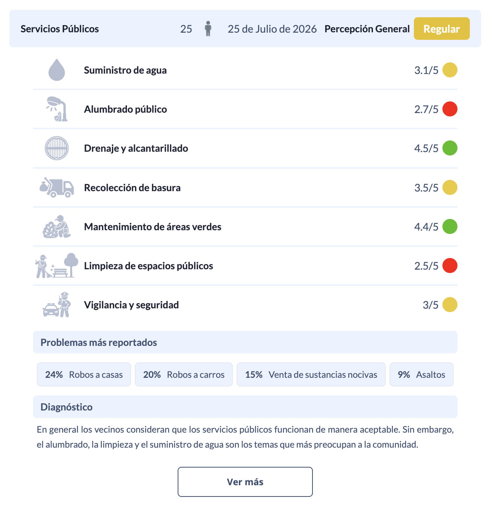
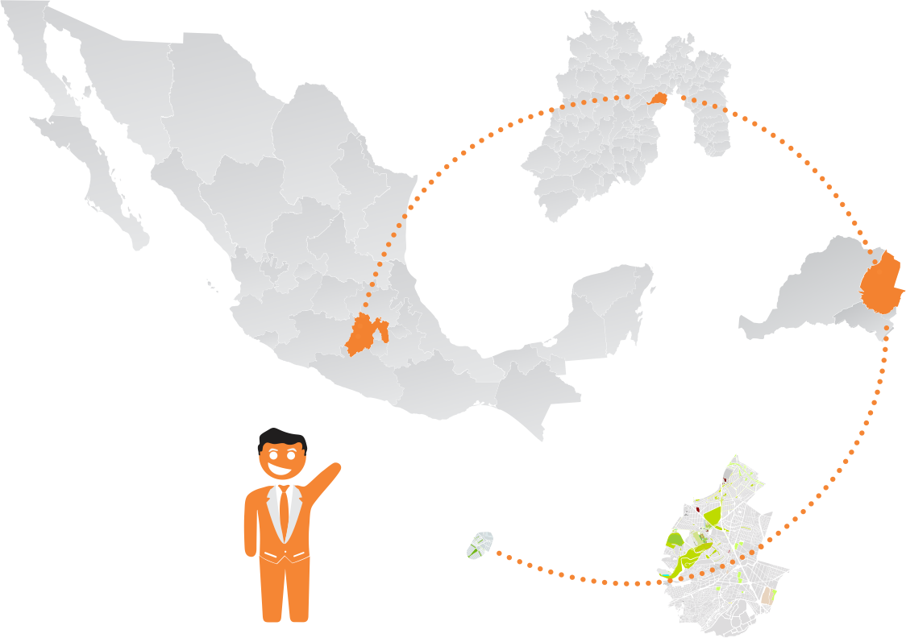
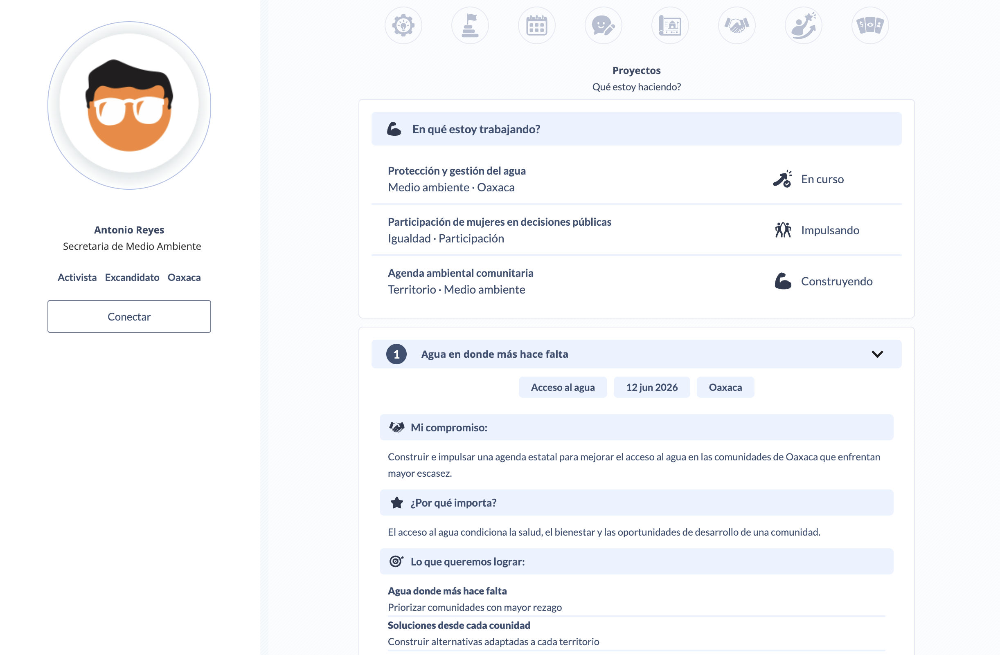

Identifica problemas, necesidades y prioridades.
Crea encuestas específicas sobre los temas que necesitas comprender.

Abre tus propuestas para enriquecerlas con conocimiento y perspectivas de tu comunidad.
Recibe ideas, sugerencias y reacciones que ayuden a identificar y ordenar conocimiento ciudadano.
Convierte la participación en información clara para tomar decisiones.
Construye una red que puede seguir participando, aportando y conectada contigo en el tiempo.